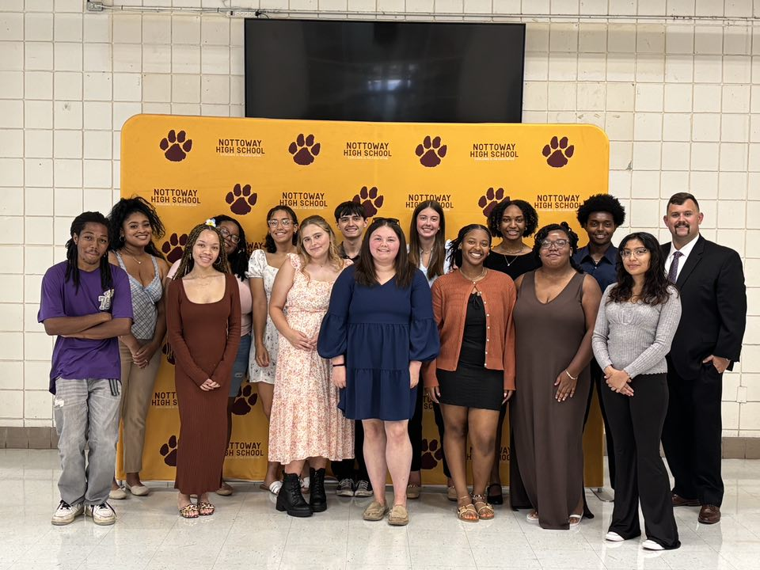

Branch: Engagement and Motivation | Treatment: Division-Wide (one school) | Cohort 1
Review copy and leave comments
Nottoway County's community schools program is anchored at the high school, where the coordinator built a bridge between the school and local community through an internship program. In the program's first year, it placed 15 students with five employers across the county. Students gained access to career experiences across local government, higher education, food service, and the military that are often difficult to find in rural communities, but are so important for postsecondary aspirations.
The internships are one way the division is working toward its goals of reducing chronic absenteeism from 26.3 percent to below 15 percent and increasing on-time graduation from 93.8 percent to 95 percent. An advisory group with parent and community voice and a day-to-day implementation team support the work. As employers open their doors, the community has become part of how students prepare for life after graduation, extending the work well beyond the school building.

Nottoway's internship program is built on the shared leadership and teaming elements that make community schools work so successful. The program highlights rising graduates as the future of Nottoway County's future workforce and provided opportunities for the first cohort of students, pictured here, to gain career experience through internships with community partners.
"Nottoway High School has been on an upward trajectory during the implementation of the community school grant. The grant award has allowed students to have career experiences and opportunities that they normally would not have been exposed."
— Marcia Martin, Community School Coordinator
Nottoway's 5 community events drew 275 attendees so far this year.